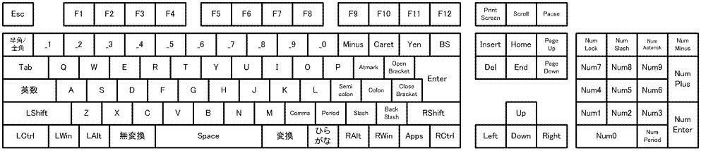
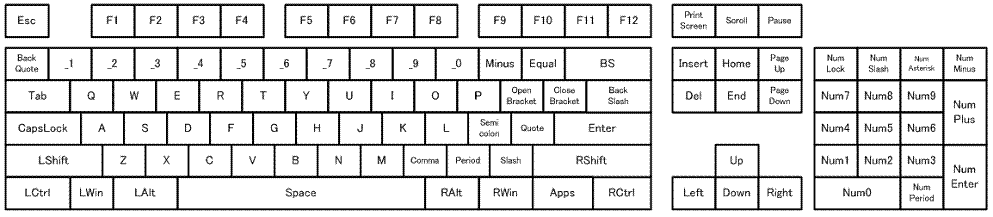

Esc F1 F2 F3 F4 F5 F6 F7 F8 F9 F10 F11 F12 PrintScreen Scroll Pause 半角/全角 _1 _2 _3 _4 _5 _6 _7 _8 _9 _0 Minus Caret Yen BS Insert Home PageUp NumLock NumSlash NumAsterisk NumMinus Tab Q W E R T Y U I O P Atmark OpenBracket Enter Del End PageDown Num7 Num8 Num9 NumPlus 英数 A S D F G H J K L Semicolon Colon CloseBracket Num4 Num5 Num6 LShift Z X C V B N M Comma Period Slash BackSlash RShift Up Num1 Num2 Num3 NumEnter LCtrl LWin LAlt 無変換 Space
変換 ひらがな RAlt RWin Apps RCtrl Left Down Right Num0 NumPeriod

Esc F1 F2 F3 F4 F5 F6 F7 F8 F9 F10 F11 F12 PrintScreen Scroll Pause BackQuote _1 _2 _3 _4 _5 _6 _7 _8 _9 _0 Minus Equal BS Insert Home PageUp NumLock NumSlash NumAsterisk NumMinus Tab Q W E R T Y U I O P OpenBracket CloseBracket BackSlash Del End PageDown Num7 Num8 Num9 NumPlus CapsLock A S D F G H J K L Semicolon Quote Enter
Num4 Num5 Num6 LShift Z X C V B N M Comma Period Slash RShift
Up Num1 Num2 Num3 NumEnter LCtrl LWin LAlt Space
RAlt RWin Apps RCtrl Left Down Right Num0 NumPeriod
109.nodoka、104.nodoka 定義ファイルでは、各キーに別名を併記することで、割り当てを実施していますが、上記では、一番短いもの あるいは 一般的なもの から、ひとつを選んで表記しました。
図の pdf ファイルは、こちら。また、 ここで、出ていないキーについては、タスクトレイメニュー調査(I)...の「スキャンコードの調査」を行うか、直接 109.nodoka、104.nodoka を ご覧ください。
なお、109.nodoka, 104.nodoka には、下記に示すような システム系のキー、電源関係のキー、マルチメディアキー が定義されています。
ノートパソコンや、省スペースなキーボード、あるいはNetBookで、存在する Fn キーは、スキャンコードが取れるならば、利用可能ですが、通常ハードウェアで処理されており、使えません。・システム係
SysRq システムリクエスト 単独で存在することはまれだが、シフトキーや、Fnキーを押した状態で、発生するなどの可能性がある。
Break ブレークキー 同様に、シフトキーや、Fnキーを押した状態で、発生するなどの可能性がある。
・電源関係 （これらACPIキーWakeUp, Sleep, Powerキー は Windows のバージョンによっては認識できません。）
PowerOff 電源を落とす Powerキー
Sleep スリープさせる Sleepキー
WakeUp スリープからの復帰。 WakeUpキー以下は、109.nodokaのみ。英語キーボードをお使いで、シンボル USE104 の場合には、109.nodoka から 該当する記述を、自分の設定ファイルにコピーしてご利用ください。
（歴史的なもので、104.nodoka に記載しても良いのですが、「窓使いの憂鬱」の 104.mayu に記述されていなかったため、そのままとなっています。）・Windows Media Playerの操作関係
PreviousTrack 前の曲
NextTrack 次の曲
Play/Pause プレイ/ポーズ
Stop ストップ
Mute ミュート
VolumeDown 音量ダウン
VolumeUp 音量アップ
・その他、アプリ起動キー
MM/Calculator 電卓を起動する。
Email メールソフトを起動する。